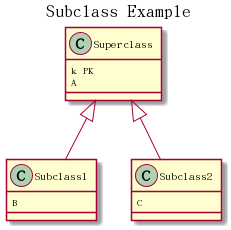
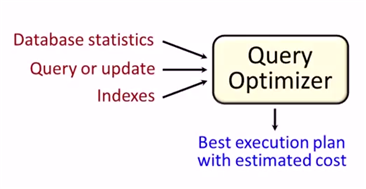

Database Concept
Table of Contents
1 Rational Algebra
1.1 Basic
- select \(\sigma_{P}(r)\)
- project \(\Pi_{S}(r)\)
- rename \(\rho_{x(A_1,A_2,...,A_n)}(r)\)
- union \(r\cup s\)
- difference \(r-s\)
- cartesian-product \(r\times s\)
1.2 Addition
1.2.1 intersection
\[r\cap s = r-(r-s)\]
1.2.2 natual join
\[r\Join s = \Pi_{R\cup S}(\sigma_{r.A_1=s.A_1 \land ...}(r\times s))\]
1.2.3 theta join
\[r\Join_{\theta}s = \sigma_{\theta}(r\times s)\]
1.2.4 devision
\[temp1 \leftarrow \Pi_{R-S}(r)\] \[temp2 \leftarrow \Pi_{R-S}((temp1\times s) - \Pi_{R-S,S}(r))\] \[result = temp1 - temp2\]
1.2.5 aggregation
\[group_{column}\zeta_{aggre\_func(column)}(r)\]
1.3 Modification
- delete \(r\leftarrow r - E\)
- insert \(r\leftarrow r\cup E\)
- update \(r\leftarrow \Pi_{F_1,F_2,...,F_n}(r)\)
2 SQL Language
2.1 Command
2.1.1 CREATE & DROP & ALTER
CREATE DATABASE dbname; USE DATABASE dbname; CREATE TABLE table_name (column_name TYPE Constrains, ... ); DESC table_name; DROP TABLE; ALTER TABLE table_name ADD COLUMN columnName ... ADD PRIMARY KEY (columnName) RENAME TO tableNewName CHANGE COLUMN columnOldName columnNewName TYPE ... MODIFY COLUMN columnName TYPE... DROP COLUMN columnName
2.1.2 INSERT & UPDATE & DELETE
INSERT INTO tableName [(columnName1, columnName2, ...)] VALUES ('value1', 'value2', ...); UPDATE tableName SET columnName1 = 'value1', columnName2 = 'value2' WHERE expr; DELETE FROM tableName WHERE expr;
2.1.3 NOT
When 'NOT' use with 'BETWEEN' and 'LIKE', 'NOT' must follow with 'WHERE' or 'AND/OR'. 'NOT IN' is an exception. "IS NOT NULL" also.
2.1.4 SHOW
SHOW CREATE TABLE tableName; SHOW COLUMNS FROM tableName; SHOW INDEX FROM tableName; SHOW WARNINGS;
UPDATE tableName SET columnName = CASE WHEN column_1 = somevalue1 THEN newValue;
2.1.5 GROUP BY
remove the duplicates
SELECT columnName1, columnName2 FROM tableName GROUP BY columnName2
2.1.6 WITH
Define temporary view
WITH temp_view_name(columnName...) as select statement SELECT ... FROM temp_view_name WHERE ...
2.1.7 RECURSIVE
- CREAT RECURSIVE VIEW
- WITH RECURSIVE
WITH RECURSIVE empl(employee_name, manager_name) as ( SELECT employee_name, manager_name FROM manager UNION SELECT manager.employee_name,empl.manager_name FROM manager, empl WHERE manager.manager_name = empl.employee_name ) SELECT * FROM empl
2.1.8 GRANT & REVOKE
- GRANT statement ON table TO who
- REVOKE statement ON table FROM who
2.1.9 Other Keywords
- REGEXP pattern
- IN ('value1', 'value2', …)
columnName BETWEEN value1 and value2
Equivalent to "columnName > value1 and columnName < value2"
- FIRST, LAST, BEFORE, AFTER, SECOND…
ORDER BY
ORDER BY columnName [ASC/DESC]
- EXISTS, NOT EXISTS are always using in corelated subquery.
UNION
Suppress the duplicates by default. UNION ALL can keep the duplicates.
2.2 Datatype
CHAR, VARCHAR, BLOB, INT, DEC, DATE, DATETIME
2.3 Join
2.3.1 Overview

2.3.2 Inner Join
An inner join is just a cartesian join with some result rows removed by a condition in the query.
2.4 Subquery
2.4.1 Noncorrelated Subquery
A subquery that stands alone and doesn't reference anything from the outer query.
RDBMS will excute inner first, then excute outer.
2.4.2 Correlated Subquery
A subquery that relies on values returned from the outer query.(Slow)
3 Design
3.1 Steps
- Find the one thing need to be described.
- List necessary information about this thing.(Depends on how to use this table)
- Break down the information into pieces .
3.2 Schema Pattern
3.2.1 One to One
3.2.2 One to Many
3.2.3 Many to Many
use junction table.
3.3 Functional Dependency
3.3.1 Definition
\[\forall t,u \in R\ (t[\bar A]= u[\bar A]) \to (t[\bar B] = u[\bar B])\]
3.3.2 Functional Dependency
If we have a functional dependency \(\bar A \to \bar B\),
Trivial
\(\bar B \subseteq \bar A\) and \(\bar A \to \bar A \cup \bar B\) elso.
Nontrivial
\(\bar B \nsubseteq \bar A\)
Completely nontrivial
\(\bar A \cap \bar B = \emptyset\)
3.3.3 Rules For FD
Splitting rule
If \(\bar A \to B_1, B_2\) , then \(\bar A \to B_1\ \bar A \to B_2\)
Combining rule
If \(\bar A \to B_1\ \bar A \to B_2\), then \(\bar A \to B_1, B_2\)
Transitive rule
If \(\bar A \to \bar B\) and \(\bar B \to \bar C\), then \(\bar A \to \bar C\)
3.3.4 Closure of Attributes
Given relation, FDs, set of attributes \(\bar A\) Find all B such that \(\bar A \to B\) .
3.4 Multivalued Dependency
3.4.1 Definition
\(\forall t, u\in R:\ t[\bar A] = u[\bar A]\) then \(\exists v \in R:\) \(v[\bar A] = t[\bar A]\) and \(v[\bar B] = t[\bar B]\) and \(v[rest] = u[rest]\)
MVD says, If two tuples have same value for \(\bar A\), then we have every combination for \(\bar B\) value and the rest.
| tuple | \(\bar A\) | \(\bar B\) | rest |
|---|---|---|---|
| t | \(\bar a\) | \(\bar b_1\) | \(\bar r_1\) |
| u | \(\bar a\) | \(\bar b_2\) | \(\bar r_2\) |
| v | \(\bar a\) | \(\bar b_1\) | \(\bar r_2\) |
Note that, there aslo must exist w:
| w | \(\bar a\) | \(\bar b_2\) | \(\bar r_1\) |
Trivial MVDs
\(\bar B\subseteq \bar A\) or \(\bar A\cup \bar B = all\ attributes\) always satisfied MVD. E.g. for first case, Consider \(\bar{AB} \twoheadrightarrow \bar B\).
Nontrivial
otherwise.
3.4.2 Rules For MVD
MVD is a tuple-generating dependency.
- FD is a MVD
Intersection rule
If \((\bar A\twoheadrightarrow \bar B) \land (\bar A\twoheadrightarrow \bar C)\) , then \(\bar A\twoheadrightarrow \bar B\cap \bar C\) .
Transitive rule
If \((\bar A\twoheadrightarrow \bar B) \land (\bar B\twoheadrightarrow \bar C)\) , then \(\bar A\twoheadrightarrow \bar C - \bar B\) .
4 Normalization
4.1 1-NF
Data in your column is atomic if it's been broken down into the smallest pieces that you need.
Rule 1: A column with atomic data can't have several values of the same type of data in that column. One example obeys the rule 1:
food_name ingredients bread flour, milk, egg, yeast, oil salad lettuce, tomato, cucumber Rule 2: A table with atomic data can't have multiple columns with the same type of data.
teacher student1 student2 Ms.Mary Joe Ron
4.2 2-NF
- Rule 1: Be in 1NF
- Rule 2: Have no partial functional dependencies.
4.3 3-NF
- Rule 1: Be in 2NF
- Rule 2: Have no transitive dependencies.
4.4 Boyce-Codd Normal Form(BCNF, 3.5-NF)
FD leads to the BCNF.
Definition Relation R with FDs is in BCNF if:
For each nontrivial \(\bar A\to B\), \(\bar A\) is a key.
4.4.1 Validation Example
- R(A, B, C, D)
- FDs: \(AC\to D,\ D\to A,\ D\to C,\ D\to B\)
- For every \(\bar{left}\) can determine all the attributes.
4.5 4-NF
Definition
Relation R with MVDs is in 4NF if:
For each nontrivial \(\bar A\twoheadrightarrow \bar B\), A is a key.
4NF is in BCNF.
5 Subclasses
5.1 Complete vs. Incomplete(Partial)
Complete: Every object is in at least one subclass.
5.2 Overlapping vs. Disjoint(Exclusive)
Overlapping: One object is in two+ subclasses.
5.3 How to design?
3 choices:
- Subclass relations contain superclass key + specialized attrs
- Subclass relations contain all attributes
- One relation containing all superclass + subclass attrs
Best translation may depend on properties:
- Heavily overlapping -> design 3
- Disjoint, complete ->design 2
Examples:

- S(_K_, A), S1(_K_, B), S2(_K_, C)
- S(_K_, A), S1(_K_, A, B), S2(_K_, A, C)
- S(_K_, A, B, C)
6 Constraints
6.1 Motivation
Constrain allowable database states.(static)
6.2 Syntax
Major keywords: PK, FK, UNIQUE, CHECK
Examples:
Create ... { columnName type CHECK (columnName IN ('value1', 'value2')); } ADD CONSTRAINT CHECK columnName > 1; CHECK 'A' = SUBSTRING(columnName, 1, 1);
6.3 Foreign Key
6.3.1 Facts
- A FK can have different name than the parent key.
- FK values can be NULL.
- We can make sure a FK contains a meaningful value by using a constraint .
- The FK doesn't have to be the primary key of the parent table, but it must be unique.
6.3.2 Creation
CREATE TABLE tableName ( ... columnName TYPE NOT NULL, [CONSTRAINT constraint_name,] FOREIGN KEY (foreign_key_name) REFERENCES parent_tableName (parent_columnName) )
You can name constraint_name and foreign_key_name whatever you like.
7 Triggers
7.1 Motivation
- To enforce constraints(Dynamic)
- Move logic from apps into DBMS
7.2 Usage
7.2.1 Event-Condition-Action Rules
When event occurs, check condition; if true, do action.
- syntax
CREATE TRIGGER *name* [BEFORE|AFTER|INSTEAD] OF *events* *[referencing-variables]* [For Each Row] [when (*condition*)] *action*
- events
INSERT ON T DELETE ON T UPDATE [OF C1,...,Cn] ON T
- [For Each Row]
Determines whether the trigger is row-level or statement-level
referencing-variables
DEPENDS ON [For Each Row] OLD row AS *var* NEW row AS *var* OLD table AS *var* NEW table AS *var*
condition
In when or where clause depends on the SQL Implementation.
8 Indexes
8.1 Usage
Different between full table scans and immediate location of tuples.
8.2 Underlying Data Structures
Balanced trees (B tree, B+ tree)
When uses ">, <, >=, <=" in query.
Hashtable
When uses "=" in query.
- skiplist
8.3 SQL Syntax
CREATE INDEX IndexName ON T(A1,A2...) CREATE UNIQUE INDEX ... DROP INDEX IndexName
8.4 Downsides
- Extra space
- Index creation
Index maintenance(Important)
When updates database, indexes will also be updated.
8.5 Upsides
Benefits depends on:
- Data distributions
- Query vs. update load
- Size of table(and possibly layout)
8.6 Physical Design Advisors
- Input (database statistics and workload)
- Output (recommended indexes)

9 Transaction
9.1 Motivation
- Concurrent database access
- Resilience to system failures
9.2 Properties
A(Atomicity)
Each transaction is "all-or-nothing", never left half done.
C(Consistency)
Can assume all constrants hold when transaction begins. Must guarantee all constraints hold when transaction ends. Serializability -> constraints always hold
I(Isolation)
Serializability: Execution must be equivalent to some sequential(serial) order of all transactions.(e.g. T9, T1, T2, T3, …)
D(Durability)
If system crashes after transaction commits, all effects of transaction remain in database.
9.3 Isolation levels
9.3.1 dirty data: written by an uncommitted transaction
9.3.2 nonrepeatable reads: an item read multiple times cannot change values
T1: Update Student Set GPA=(1.1)*GPA T2.S1: Select AVG(GPA) From Student T2.S2: Select MAX(GPA) From Student
T2.S1 may excute before T1, T2.S2 may excute after T1. The GPAs in S1 and S2 are different, leads to a nonrepatable reads violation.
9.3.3 phantoms
T1: Insert Into Student [100 new tuples] T2.S1: Select AVG(GPA) From Student T2.S2: Select MAX(GPA) From Student
T2.S1 may excute before T1, T2.S2 may excute after T1. [100 new tuples] are known as the phantoms tuples.
9.3.4 Standard default: Serializable
9.3.5 Some systems have default Repeatable Read
| levels | dirty reads | nonrepeatable reads | phantoms |
|---|---|---|---|
| Read Uncommitted | Y | Y | Y |
| Read Committed | N | Y | Y |
| Repeatable Read | N | N | Y |
| Serializable | N | N | N |